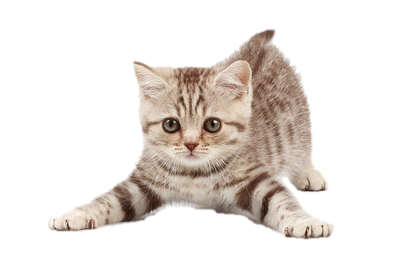

Seguro que este listado de motivos te ayudará a dar el paso. Por todo esto y mucho mas deberías adoptar un gato;
Suena increíble, pero es cierto. Los gatos ayudan a rebajar los niveles de estrés y ansiedad y, por tanto, a prevenir los ataques al corazón.
Según un estudio realizado por la Universidad de Bristol, los propietarios de gatos suelen tener mayores acreditaciones y títulos universitarios que los que tienen perro. Además, al requerir menos atenciones y cuidados, también permiten que te centres más en tu trabajo.
El impacto medioambiental que produce la fabricación de alimentos para gatos es significativamente menor que la de alimentos para perros, según un estudio realizado en 2009.
Un gato es un excelente amigo, y lo será también en los peores momentos. Por ejemplo, si has perdido a un ser querido, la fase de duelo te será más llevadera si tienes un gato cariñoso a tu lado.